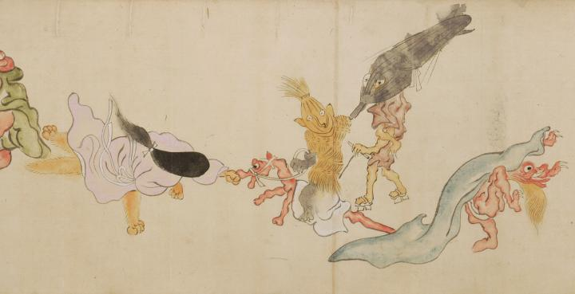

傘と草鞋の化物が連れ立って歩いているように見える。その後ろには布をかぶった赤鬼が滑稽な姿で描かれている。前方には女性の格好の狐が駆け出している。
出典：親書誌：U426_nichibunken_0054：百鬼夜行絵巻；ヒャッキヤギョウエマキ／日付：2006／資源識別子：U426_nichibunken_0054_0005_0000
Copyright (c)2010- International Research Center for Japanese Studies, Kyoto, Japan. All rights reserved.